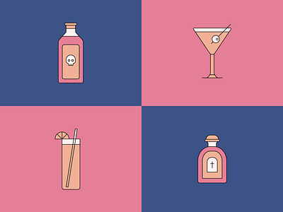

<p>
    <mat-toolbar color="primary">
        <!--  -->
        <span>CocktailForYou</span>
        <span class="spacer"></span>
        <button mat-flat-button color="primary" routerLink="/">Home</button>
        <button mat-flat-button color="primary" [matMenuTriggerFor]="sampleMenu">Menu</button>
    </mat-toolbar>
</p>

<mat-menu #sampleMenu="matMenu">
    <button mat-menu-item>Menu 1</button>
    <button mat-menu-item>Menu 2</button>
  </mat-menu>